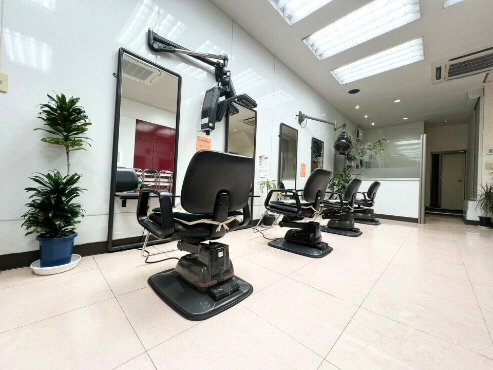
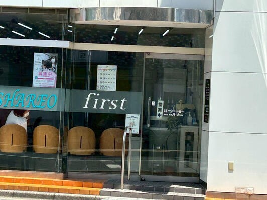
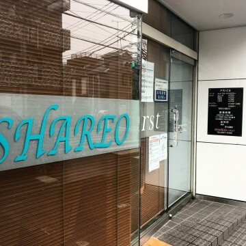
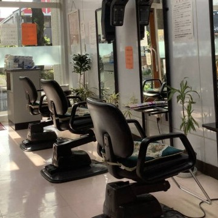

SHAREO first
練馬区 大泉学園町
大泉学園で、
長く愛されてきた
街のヘアサロン。

About Us Concept
大泉学園町の
通り沿いに、
白い壁の
小さなお店が
あります。
清潔な空間で、
ゆっくりと
髪をととのえる
時間をどうぞ。

Our Salon Salon

Sign
通りに面した入口

Seats
ゆったりとした椅子
※ スタイル例のお写真は公開されているものが確認できませんでした（No Data）。施術例をご提供いただければ、こちらに並べてご紹介します。
Treatment Flow
-
ご相談
今の髪のお悩みと、これからの過ごし方をうかがいます。気になることは遠慮なくお話しください。
-
ご提案
髪質やくせ、ふだんのお手入れにかけられる時間を見ながら、無理のないかたちをご提案します。
-
施術
ゆったりとした椅子で、丁寧に進めます。途中で気になることがあれば、その場でお声がけください。
-
仕上げ
最後に全体を整えます。ご自宅での扱い方もお伝えします。
※ こちらの流れはサンプルです。実際のご案内は店舗にご確認のうえ差し替えます。
Access Salon Info
- Store
- SHAREO first（シャレオ ファースト）
- Address
- 〒178-0061
東京都練馬区大泉学園町4-23-4 - Access
- No Data最寄り駅からの徒歩分数は公表資料で確認できていません。西武池袋線「大泉学園駅」からは距離があり、バスのご利用が現実的な立地です。
- Open
- No Data営業時間は確認できていません。お越しの前にお電話でご確認ください。
- Closed
- No Data
- Tel
- 03-3921-3465
- Note
- 練馬区「いきいき健康券」利用可席数・スタッフ・お支払い方法・駐車場はいずれも未確認です（No Data）。